USB3Vision Camera Manual
SCU Product Manual
Sony CMOS Sensor USB3Vision Camera USER MANUAL
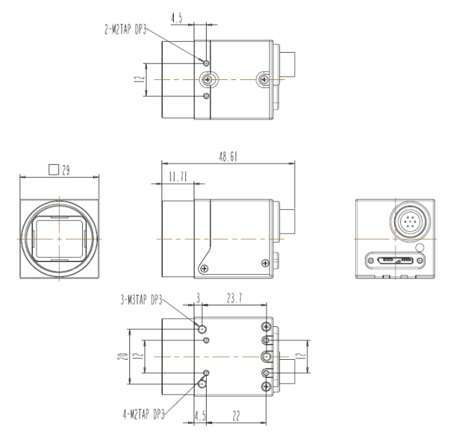
1. Preparation
1.1 PC Minimum/Recommended Specifications
1) CPU: Intel Core i3 (minimum), i5 or higher (recommended)
2) RAM: 2GB or more (minimum), 8GB or more (recommended)
3) O/S: Windows 7 (32bit/64bit) or higher
4) VGA: FHD support (minimum), UHD support or higher (recommended)
1.2 SDK
▶ To use the Crevis USB3Vision camera, you can either receive video using the SDK provided by Crevis, or
You can acquire images using an image library that supports USB3 Vision. (However, separate
Driver may be required)
▶ Crevis SDK download link: http://www.crevis.co.kr/kor/support/download/MCam40_SDK.zip
1.3 Cable
▶ A USB3.1 Gen1 Micro-B Type cable is required for data communication.
▶ External power can be applied separately through the 6Pin connector.
1.4 Precautions
▶ Operating temperature: 0℃ ~ +40℃
Keep the temperature constant as data output may change as ambient temperature changes. more stable
It is recommended to use a heat sink of 40mm x 60mm x 10mm or larger combined with the product for optimal operation.
c.
▶ Some models limit image sensor video output when the temperature limit is reached. This condition determines the quality of the video
This means that immediate heat dissipation measures are required as the durability of the product cannot be guaranteed. Let's see
For further details, please refer to ‘Device Temperature State’ in Section 4-18.
▶ If you acquire images simultaneously by connecting two or more cameras through a USB Host Card or HUB, the bandwidth
Problems may arise.
▶ LED status window
You can check the current status of the camera through the LED on the back of the camera. The connection between the host and the camera is
If it is limited or image acquisition fails, check the status of the LED.
▶ Be careful of water leaks and moisture
Since the product itself does not have a waterproof function, you must be careful not to expose it to excessive moisture.
▶ Magnetic and electric fields
If the input/output signal is exposed to a strong magnetic or electric field, it may cause distortion of the signal, so be careful.
I do.
▶ Ventilation
Power consumption varies depending on the usage environment, but since power consumption is high, seal the area around the product or
Do not block air flow and maintain ventilation.
▶ The product may be modified without notice to improve its functions and performance.
2. Product Specifications
2.1 Product Overview
▶ Sony CMOS Sensor Camera
▶ ROI Scan and X, Y Reverse mode support
▶ Supports Freerun and Trigger Mode
▶ Supports defective pixel correction function
▶ USB 3 Vision Standard 1.1 compatible
▶ Supports External Trigger Mode (via 6pin circular connector)
▶Supports status LED
▶ Power supply: DC (5V ~ 13.2V range supported) and USB3 Gen.1 Bus Power
▶ System Block Diagram
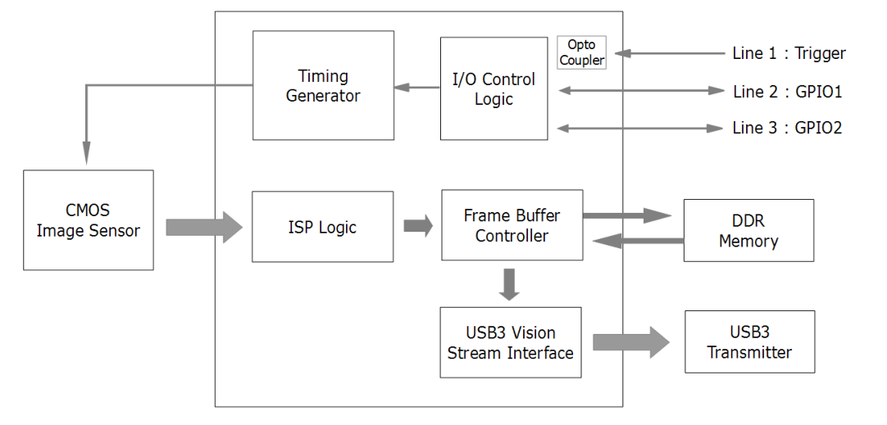
2.2 Key Specifications
| Spec. | MU-A040M/K -523 | MU-A160M/K -226 | MU-A320M/K -118 | MU-A320M/K -55 | MU-A500M/K -35(-75) | MU-A121M/K -23 | MU-A121R/L -31 | ||
|---|---|---|---|---|---|---|---|---|---|
| MU-A201R/L | |||||||||
| -18 | |||||||||
| Sensor | 0.4M | 1.58M | 3.2M | 3.2M | 5M | 12M | 12.1M | 20.1M | |
| IMX287LLR(LQR ) | IIMX273LLR(LQR ) | IMX252LLR(LQR ) | IMX265LLR(LQR ) | IMX264 LL(Q)R (IMX250LL(Q)R) | IMX304LL(Q)R-C | IMX226CL(Q)J-C | IMX183CL(Q)J-C | ||
| Sensor Format | 1/2.9” | 1/2.9” | 1/1.8” | 1/1.8” | 2/3” | 1.1” | 1/1.7” | 1” | |
| Pixel Size(um) | 3.45 x 3.45 | 6.90 x 6.90 | 3.45 x 3.45 | 3.45 x 3.45 | 3.45 x 3.45 | 3.45 x 3.45 | 1.85 x 1.85 | 2.4 x 2.4 | |
| Active Pixels | 728 x 544 | 1456 x 1088 | 2064 x 1544 | 2064 x 1544 | 2464 x 2056 | 4112 x 3008 | 4072 x 3046 | 5496 x 3672 | |
| Frame Rate (Max)* | 523fps | 226fps | 118ps | 55fps | 35fps(75fps) | 23fps | 30fps | 18fps | |
| Exposure Time | 1us ~ 3sec (* Exposure Offset Excluded) | Min.99us | Min.141us | ||||||
| Scanning Method | Full / ROI(Horizontal+Vertical) / Reverse(X,Y,All) / Decimation(Horizontal+Vertical) | Full / Reverse(X,Y,All) ROI(Horizontal+Vertical) | |||||||
| Binning | X | O (Only Mono Model) | O (Only Mono Model) | X | X | X | X | X | |
| ADC Bit Depth | 8, 12bit | 8, 10, 12bit | 8, 10, 12bit | 12bit | 12bit | 12bit | 10, 12bit | 10, 12bit | |
| Sync. System | Internal(Freerun), External(6-pin Circular port), Software trigger via PC | ||||||||
| Trigger Mode | Timed, Trigger Width | ||||||||
| Shutter | Global Shutter | Rolling Shutter / Global Reset | |||||||
| Gain Abs | Analog : 0 ~ 27dB (1x ~ 24x) Digital : 0 ~ 19dB (1x ~ 9x) | Analog : 0~27dB (1x~22.5x) Digital : 0~189B (1x~9x) | |||||||
| Black Level | Analog : 0 ~ 255 (8bit) Digital : 0 ~ 4095 (12bit) | ||||||||
| LUT & Gamma | Adjustable LUT (12bit to 12bit) or Gamma Correction(0 ~ 3.999) | ||||||||
| Auto White Balance | Off / Once / Continuous (Only Color Models) | ||||||||
| Auto Gain/Exposure | Off / Once / Continuous Auto Exposure(Gain) Lower Limit / Auto Exposure(Gain) Upper Limit | ||||||||
| ROI | Horizontal / Vertical ROI Support | ||||||||
| Video I/F | USB3.1 Gen.1 (USB 3 Vision Standard 1.1) | ||||||||
| Video Format | Mono Model : Mono8/10/12 Color Model : Mono8/10/12, BayerRG8/10/12, RGB8, BGR8 | ||||||||
| Communication | USB 3 Vision Standard 1.1 | ||||||||
| SNR | 35dB | 38dB | 36dB | 39dB | 38dB | 38dB | 36dB | 41dB | |
| Function Control | GainAuto, ExposureAuto, BalanceWhiteAuto Acquisition Frame Rate(Adjustable), Line Debouncer, Defective Pixel Correction, Shading Correction(FFC), Noise Reduction Filter, Pattern Noise Removal, Color Transformation | ||||||||
| Lens mount | C mount | ||||||||
| Optical accuracy | Optical center ≤ ± 0.1 mm | ||||||||
| Power Supply | DC(5V ~ 13.2V) or USB3 BUS | ||||||||
| Consum - ption | DC | < 4.0W | |||||||
| USB | < 4.0W | ||||||||
| Weight | < 44g | ||||||||
| Dimension | 29 x 29 x 29 ㎜ (Without mount, Connector) | ||||||||
| Operating / Storage | 0℃ ~ +40℃ (with < 20~80% RH) /-20℃ ~ +60℃ | ||||||||
| Vibration / Shock | 98 m/s2 (10.0 G) / 490 m/s2(50.0 G) | ||||||||
| Standard Compliancy | CE (EN61326-1; 2006; Class A) | ||||||||
| Environments | RoHS / WEEE |
2.3 Spectral Response
| MU-A040M-523 | MU-A040K-523 | ||
|---|---|---|---|
| MU-A160M-226 | MU-A160K-226 | ||
| MU-A320M-55(-118) | MU-A350K-55(-118) |
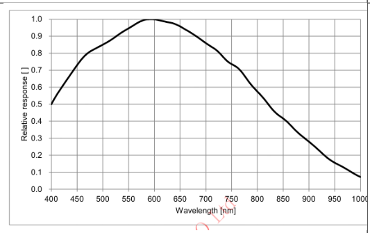
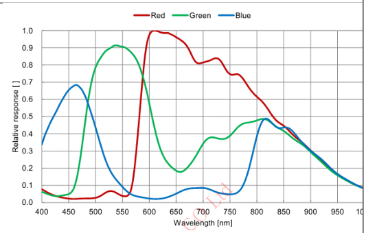
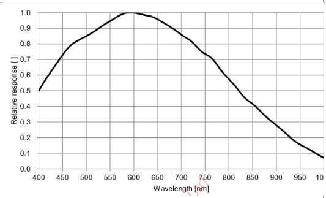
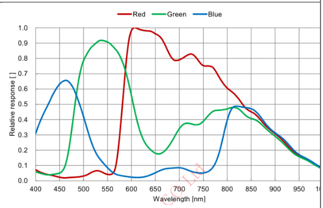
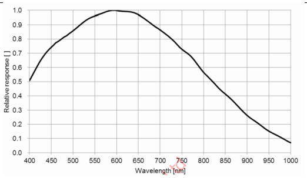
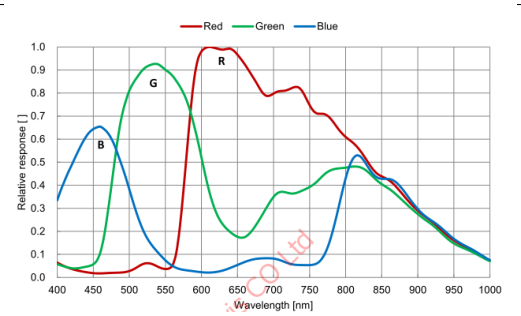
| MU-A500M-35(-75) | MU-A500K-35(-75) | ||
|---|---|---|---|
| MU-A121M-23 | MU-A121K-23 |
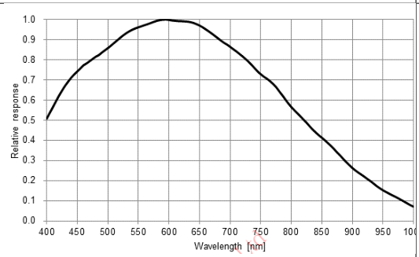
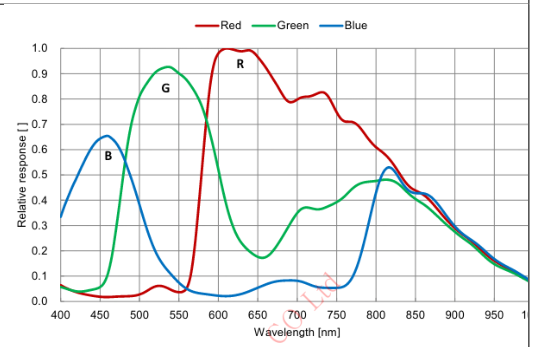
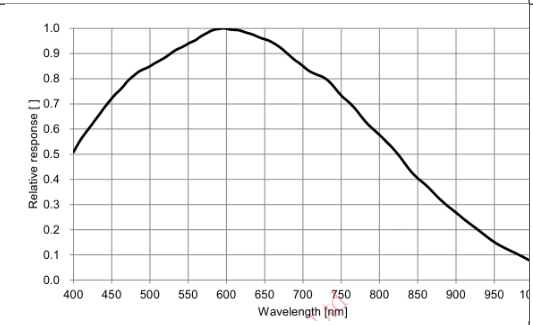
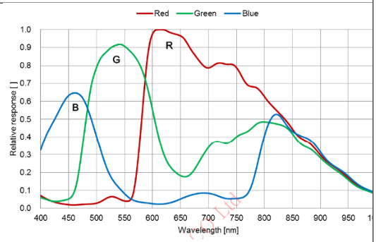
| MU-A121R-31 | MU-A121L-31 |
| MU-A201R-18 | MU-A201L-18 |
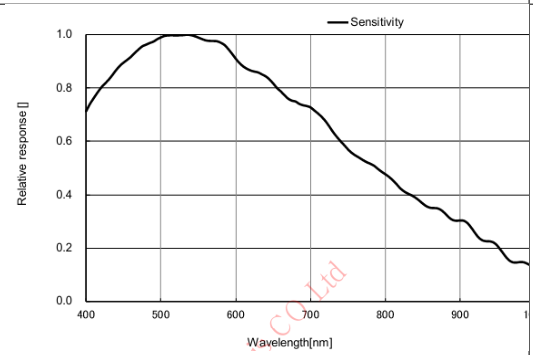
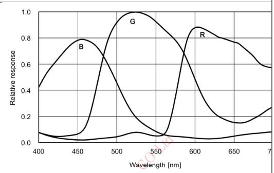
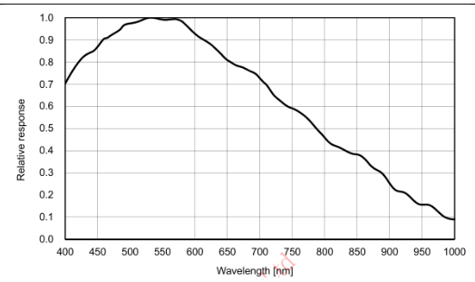
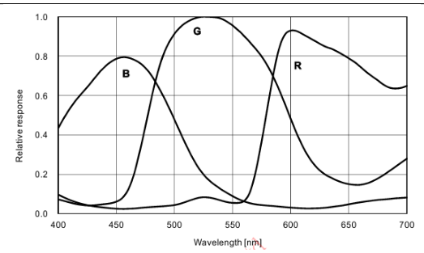
3. Camera Interface
3.1 Back Panel
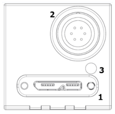
| NO. | Name | Remark |
|---|---|---|
| 1 | USB3.1 Gen.1 connector | Type Micro-B |
| 2 | Power & external I/O connector | 6Pin Circular |
| 3 | LED status display | LED |
3.2 Camera DC IN & External I/O Pin Map
1) 6 pin Circular Connector
| No. | Name | IN/OUT | Description | Remark |
|---|---|---|---|---|
| 1 | DC VCC | IN | 5V ~ 13.2V Input Range | |
| 2 | TRIGGER+ | IN | Opto-isolated Trigger input + (+2.5V~24V) | |
| 3 | GPIO 1 | IN / OUT | General Purpose I/O 1 | |
| 4 | GPIO 2 | IN / OUT | General Purpose I/O 2 | |
| 5 | TRIGGER- | IN | Opto-isolated Trigger input - | |
| 6 | DC GND | IN |
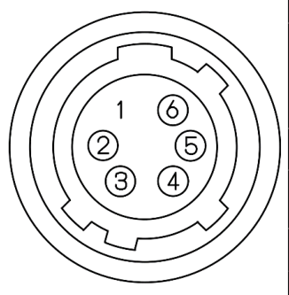
3.3 USB3.1 Gen.1 Micro-B Type Connector
1) Plug & Play support.
2) USB 2.0 connection is not supported.
3.4 LED status
| Off | Red | Orange | Green | |
|---|---|---|---|---|
| Flashing LED | Power off or Sleep State (Deep Sleep) | Command entered to a camera. | #1. USB disconnected. - Flashing periodically at 1Hz. #2. Command entered while acquisition. #3. Sleep State (Soft Sleep) - Flashing 2 times. | #1. USB has connected. - USB3 : Flashing periodically at 1Hz. - USB2 : Flashing periodically at 0.5Hz. #2. Image Streaming. |
| Solid state | 1. Camera Initialization failed. 2. Image Sensor not found. | Camera Initialization succeed. | Waiting for trigger. |
3.5 External I/O Internal Circuit
- Input
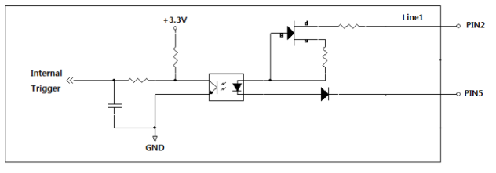
- GPIO
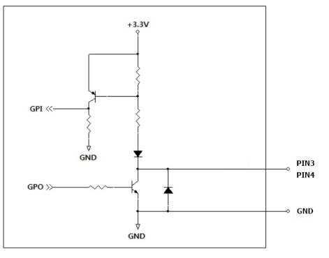
4. Camera Features
4.1 Device Control
This function allows you to monitor various conditions of the camera or control the status of the device.
| Item | Setting Value | Description | |||
|---|---|---|---|---|---|
| Device Link Throughput Limit | (Integer) | Defines the maximum bandwidth of the camera transmitter. This is the camera's Affects maximum frame rate. | |||
| Device Temperature | Command | Measures the camera's internal temperature. | |||
| Devicd Temperature State | Enumeration | Monitor the temperature status of the camera. | |||
| Device Reset | Command | This is a Hard-Reset function that re-applies the power to the camera. | |||
| Device Sleep Mode | Disable, Soft Sleep, Deep Sleep | Put the camera into a sleep state to reduce total power consumption. |
4.1.1 Device Link Througput Limit
You can define the maximum bandwidth of images transmitted from the camera to the host. Changed in Byte/Sec units
It is possible to change, and the initial shipping value varies by product, but is approximately 340MB/s ~ 360MB/s. (However, the initial shipment value is notified
(subject to change without)
4.1.2 Device Temperature
This function monitors the current temperature of the parts selected in ‘Device Temperature Selector’. ‘Temperature
As soon as you execute ‘Update Selector’, temperature information is returned as a Celsius (℃) value including decimal points. some
The model can monitor the temperature of the image sensor and the temperature of the FPGA Core board.
4.1.3 Device Temperature State
The internal temperature of the camera is monitored and displayed as ‘Normal’, ‘Warning’, or ‘Critical’. Each state
What this means is described in more detail in Section 4-18 ‘Device Temperature State’.
4.1.4 Device Reset
Hard-Reset allows you to re-power the camera with a command. USB connection is established immediately after entering the command.
At the same time as it is removed, the camera's power is re-applied and rebooted. Therefore, after Device Reset, in Application
The camera must be opened again for normal use.
4.1.5 Device Sleep Mode
This function allows you to reduce total power consumption by changing the camera's state to sleep mode. When setting Soft Sleep, this
The image sensor goes to sleep, and when set to Deep Sleep mode, the image sensor and FPGA also go to sleep. gun
Power consumption can be reduced by up to 80%. When switching from Deep Sleep to Disable (Normal), approx.
An initialization time of 1.4Sec to 2Sec is required.
| Device Sleep Mode | Disable (Normal) | Soft Sleep | Deep Sleep |
|---|---|---|---|
| LED | Green LED blinks periodically. | Orange LED blinks twice repeatedly. | LED OFF |
| camera status | steady state | Image sensor: Sleep. Total power consumption reduced by approximately 40%. | Image sensor and FPGA: Sleep. Total power consumption reduced by approximately 80%. |
4.2 Image Format Control
This is a function that allows you to change the settings for the camera's image output size and format.
| Item | Setting Value | Description | |||
|---|---|---|---|---|---|
| Width, Height, Offset X, Offset Y | (Integer) | Change the output size and offset (pixel coordinates) of the image. WidthMAX ≥ Offset X + Width HeightMAX ≥ Offset Y + Height | |||
| Decimation Horizontal, Decimation Vertical | 1, 2 | The image resolution decreases and the frame rate increases. | |||
| Binning Horizontal, Binning Vertical | 1, 2 | The resolution of the image decreases, and the sensitivity or frame rate increases. c. | |||
| ReverseX, ReverseY | True / False | This is the function to flip the image up/down or left/right. | |||
| Pixel Format | Mono8/Bayer8 Mono10/Bayer10 Mono12/Bayer12 RGB8, BGR8 | You can change the format when transmitting images to the host. Please refer to Section 4.1.4 for detailed transmission order. | |||
| Test Pattern | Off, Vertical Ramp, Horizontal Ramp | You can select a test image. |
4.2.1 ROI (Region Of Interest)
By setting Width, Height, Offset
As the output image size gets smaller, the frame rate increases. (However, MU-A121R(L)-31 model and MU-
(Excluding ADC 12bit mode of A201R(L)-18 model)
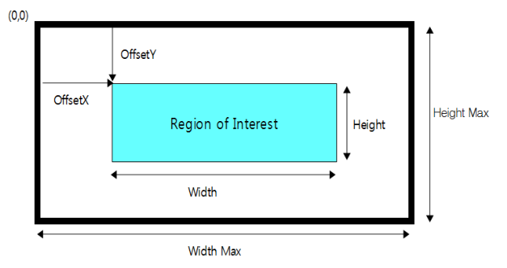
※ Note
1) Frame Rate changed due to ROI can be checked through the ‘Resulting Frame Rate’ parameter.
4.2.2 Decimation Horizontal / Vertical
This is a function that reads from the image sensor in vertical or horizontal directions, skipping 1-pixel at a time. resolution of the image
is reduced by half, while the Frame Rate increases. For color models, all four color channels are displayed.
In order to do this, it will be skipped in 2-pixel units.
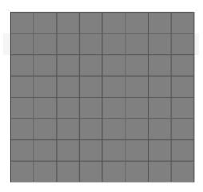
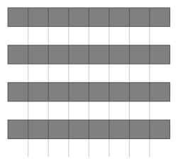
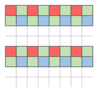
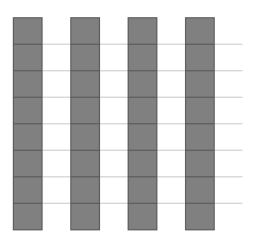
Decimation Hor. = 1x
Decimation Hor. = 1x
Decimation Hor. = 2x
Decimation Vert. = 1x
Decimation Vert. = 2x
Decimation Vert. = 1x
※ Note
The frame rate changed due to decimation can be checked through the ‘Resulting Frame Rate’ parameter.
4.2.3 Binning Horizontal / Vertical (MU-A160M-226 and MU-A320M-118 models only)
This is a function that accumulates and reads pixel values 1-pixel at a time from the image sensor in the vertical or horizontal direction. This
The resolution of the unknown is halved while the Frame Rate is increased or the brightness is approximately doubled. Color
In the case of Dell, calculations are performed in 2-pixel units to express all four color channels.
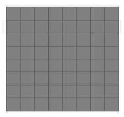
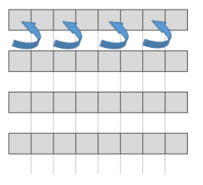
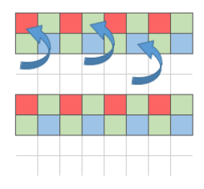
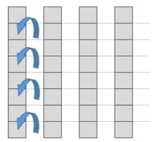
Binning Hor. = 1x
Binning Hor. = 1x
Binning Hor. = 2x
Binning Vert. = 1x
Binning Vert. = 2x
Binning Vert. = 1x
※ Note
The frame rate changed due to binning can be checked through the ‘Resulting Frame Rate’ parameter.
4.2.4 Reverse X, Y
This is a function that reverses the left/right or top/bottom of the video and outputs it. For color models, select ‘Reverse Mode’
Accordingly, the image is output with the ‘Bayer Pixel Order’ also changed.
1) When Reverse (Bayer RG → Bayer GR)
2) When Reverse Y mode is set to True, the top/bottom of the video is reversed. (Bayer RG → Bayer GB)
| Reverse X = False, Reverse Y = False (Bayer RG) | Reverse X = True, Reverse Y = False (Bayer GR) |
| Reverse X = False, Reverse Y = True (Bayer GB) | Reverse X = True, Reverse Y = True (Bayer BG) |
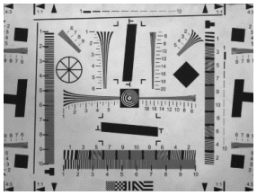
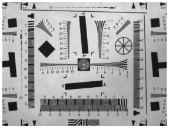
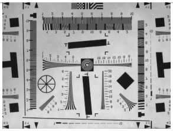
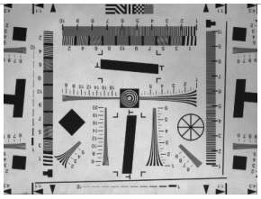
※ Precautions
1) When 'Reverse Y' is selected, defective pixels may appear because the use of Defect Filter is limited. Because of this
Exposed defective pixels can be removed in the ‘Defect Pixel Correction’ category. (Section ‘Defect Pixel Correction’
Note)
2) When ROI and Reverse are used simultaneously, the ROI function is applied from the reversed image. Same as the picture below
When Reverse is activated, the position of (0,0) Pixel, which is the starting coordinate of the Image, is reversed. Because of this Reverse
In order to image the same area as before application, an Image Offset equal to Total Size - ROI Size is required.
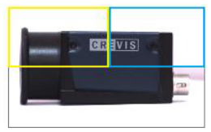
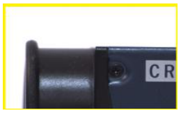
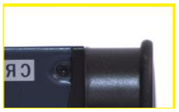
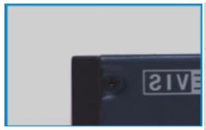
Image Size : 4024 * 3036
Image Size : 2012 * 1518
Image Size : 2012 * 1518
Image Size : 2012 * 1518
Offset X : 0,
Offset X : 0,
Offset X : 2012,
Offset X : 0,
Offset Y : 0
Offset Y : 0
Offset Y : 0
Offset Y : 0
Reverse X : False,
Reverse X : True,
Reverse X : True,
Reverse X : False,
Reverse Y : False
Reverse Y : False
Reverse Y : False
Reverse Y : False
4.2.5 Pixel Format
This is a function that allows you to change the pixel format of the video. Differences in the amount of image data transmitted for each pixel format
Because of this, transmission speed and bandwidth may vary.
| Mono8 | Mono10 |
| 8-bit image data into 8bits Descrpition : 8-bit monochrome unsigned Pixel Size : 1byte Pixel Value range : 0 to 255 | 10-bit image data into 16-bits Description : 10-bit monochrome Pixel Size : 2byte Pixel Value range : 0 to 1023 |
| Mono12 | |
| 12-bit image data into 16-bits Description : 12-bit monochrome unsigned Pixel Size : 2byte Pixel Value range : 0 to 4095 | |
| RGB8 | |
| 24-bit image data into 24-bits Description : 8-bit color component in one byte Pixel Size : 3 bytes for 1 pixel Pixel Value range : 0 to 255 |
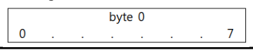
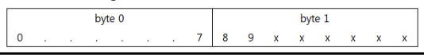
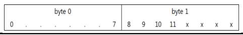
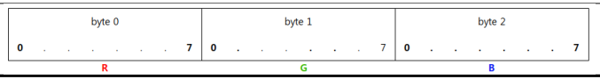
BGR8
24-bit image data into 24-bits
Description : 8-bit color component in one byte
Pixel Size : 3 bytes for 1 pixel
Pixel Value range : 0 to 255
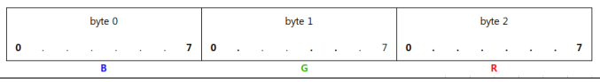
4.2.6 Test Pattern
At the intermediate stage of image processing, the image is replaced with a test pattern and transmitted. Test Pattern function
Even if activated, functions related to image acquisition such as ROI size, trigger input, and ‘Acquisition Frame Rate’
They are valid. Test Pattern images are created in 8bit gray level (0~255DN).
- Off: Sensor image
- On : Test Pattern
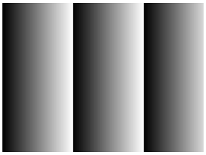
Grey Horizontal Ramp
Grey Vertical Ramp
* Ramp size may vary depending on pixel format.
※ When 8bit is set: Ramp Size = 256 Pixel
※ When setting 10bit: Ramp Size = 1024 Pixel
※ When 12bit is set: Ramp Size = 4096 Pixel
4.3 Acquisition Control
This is a function that allows you to set the method of acquiring images from the camera. Define the number of image frames to acquire.
You can.
| Item | Setting Value | Description |
|---|
| Acquisition Mode | Continuous, Single Frame, Multi Frame | Acquire images from the Acquisition Start command to the conditions below. Yes. - Continuous: Acquisition continues until Acquisition Stop. - Single Frame: Acquires only one image. - Multi Frame: Acquires only as many images as the set count. |
| Acquisition Start | Excute | Command to start image acquisition |
| Acquisition Stop | Excute | End image acquisition Command |
| Acquisition Frame Count | 0 to 255 | Number of images to be transmitted in Burst from the point of Acquisition Start. |
1) Single Frame
Each time the ‘Acquisition Start’ command is input, one image is captured and transmitted. Just one image
Acquisition stops automatically after transmission, so a separate ‘Acquisition Stop’ command is not required.
If ‘Trigger Mode’ is ‘On’, the light is exposed and transmitted by the trigger. Trigger Mode is ‘Off’
In this case, it is possible to acquire and transmit a new image with just the ‘Acquisition Start’ command.
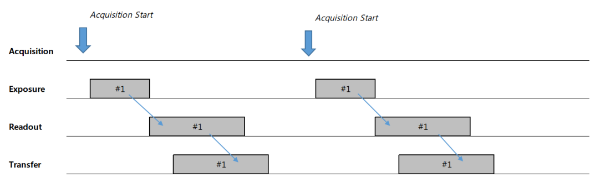
2) Multi Frame & Acquisition Frame Count
Each time the ‘Acquisition Start’ command is input, images are captured as defined in ‘Acquisition Frame Count’
and send it. Acquisition automatically stops after transmitting the specified number of images, so separate
The ‘Acquisition Stop’ command is not required. However, if the ‘Acquisition Stop’ command is entered during Grab,
Right, it reads out and transmits the frame being exposed and then stops. If ‘Trigger Mode’ is ‘On’,
It is exposed and transmitted by a power trigger.
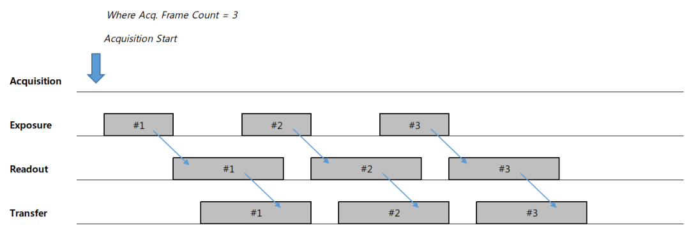
3) Continuous
Images are captured at the cycle defined in ‘Acquisition Frame Rate’ from the time the ‘Acquisition Start’ command is input.
Capture and transmit. When the ‘Acquisition Stop’ command is entered during Grab, up to the currently exposed image
After readout and transmission, acquisition will stop. At the end of exposure, the ‘Acquisition Stop’ command is issued.
Once entered, Acquisition ends after the ongoing Readout is completed. If ‘Trigger Mode’ is ‘On’
In this case, it is exposed and transmitted by a trigger.
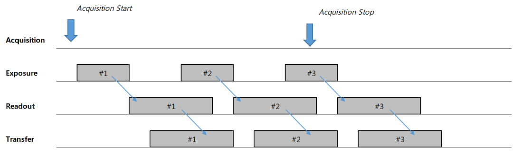
4.4 Trigger Mode Control
Controls image acquisition and output timing. The main method of image acquisition is external synchronization (Trigger Mode = On).
and internal synchronization (Trigger Mode = Off, Freerun Mode) modes, and you can set acquisition delay or transmission delay, etc.
You can.
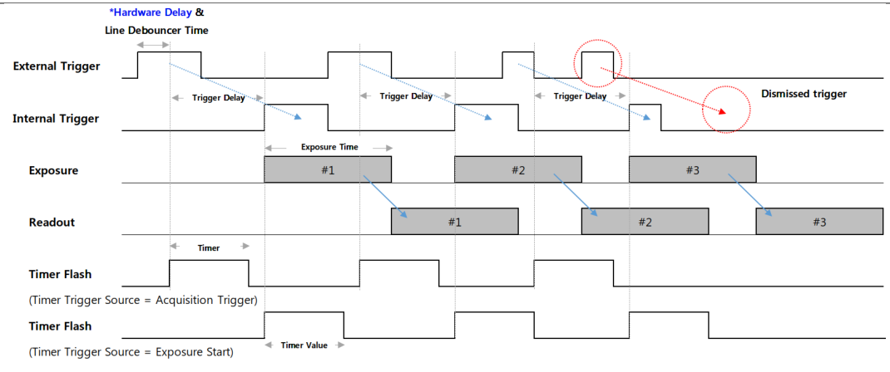
<Timing Diagram of Trigger Signals>
* Hardware Delay
| Trigger Rising edge | Trigger Falling edge | |||
|---|---|---|---|---|
| Opto-isolated Input | 10.2 us | 21.2 us | ||
| GPI | 1.3 us | 0.01 us | ||
| GPO | 0.2 us | 1.8 us |
※ When using Opto-isolated Input, set ‘Line Inverter’ to ‘False’ (Rising of Trigger signal) for shorter delay.
It is advantageous to shoot from the edge. If faster performance is required, input via the GPI port is recommended.
※ The delay time measured above is based on a trigger signal input of 3.3V level, and the delay time at a higher signal level may vary.
You can.
| Item | Setting Value | Description | |||
|---|---|---|---|---|---|
| Trigger Mode | Off, On | Off: The camera operates in Freerun mode. Internal trigger signal is generated It works. The internal trigger cycle is determined by ‘Acquisition Frame Rate’ It works. If the ‘Acquisition Frame Rate Enable’ parameter is Off, The camera operates at the maximum frame rate that can operate with the current camera settings. It's small. On: The camera operates in Trigger Mode. Trigger is hardware (Line 1) Alternatively, it is created through a software trigger command. | |||
| Resulting Frame Rate | (Read Only) | Shows the Frame Rate when Trigger Mode is set to Off. Image size and ‘Acquisition Frame Rate’, ‘Exposure Time’ and ‘Pixel’ It is determined by ‘Format’, ‘Decimation’, etc. | |||
| Trigger Sourece | Line1, Software | Select the source of the trigger you want to use as trigger input. three For additional details, please refer to the Trigger Source section below. |
| Trigger Delay | 0 to 57,844,677 (Unit : us) | From the trigger received by the camera to the exposure of the image sensor Define the delay time. Setting value 0 means Delay Off. Please refer to the Trigger Delay section below for details. |
| Transfer Delay | 0 to 57,844,677 (Unit : Clock) | Defines the time to delay the image read from the sensor at the final stage of transmission. Yes. This is only valid when ‘Low Latency Mode Enable’ is ‘False’. details Please refer to the Transfer Delay section below for details. |
| Trigger Activation | Rising Edge (Read Only) | Defines the standard for the phase of the trigger signal inside the camera. of input trigger To change the phase, use ‘Line Inverter’. |
| Line debouncer Time | 0 to 882.995 (Unit : us) | Adjust Line Debouncer Time. For details, see the Line Debouncer section below. |
4.4.1 Trigger Mode
‘Trigger Mode’ is a function that controls the exposure method of the image sensor. When setting ‘Trigger Mode’ to ‘Off’
Right, the camera operates in Freerun Mode. Freerun mode is the maximum that can operate with the current settings.
Internal VD is created based on Frame Rate. At the same time, an exposure signal is generated as much as the set ‘Exposure Time’
and is input to the image sensor. Periodic exposure is performed by the generated Exposure signal, and exposure is performed accordingly.
After reading the published image, it is transmitted to the host.
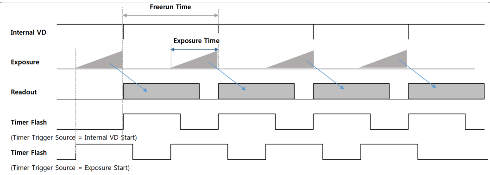
<Timing Diagram of Freerun Mode>
On the other hand, if Trigger Mode is set to ‘On’, the camera operates in Trigger Mode. Trigger
In mode, the exposure start point or exposure time is determined by the trigger input from the outside. Exposure
After completion, frames are read and transmitted in the same way as in Freerun mode. Detailed timing
Please refer to the picture on p.21<Timing Diagram of Trigger Signals>.
※ Precautions
1) If a trigger signal with a cycle faster than the product’s maximum frame rate is input, the frame rate of the output image is
It deteriorates. (For determination of abnormal trigger input, refer to ‘Counter Control’) Therefore, signal specifications within camera specifications must be met.
Please follow the instructions and enter your information.
2) If noise enters the trigger signal line, there is a possibility that the camera may mistake the noise for a trigger signal.
c. (Refer to the ‘Line Debouncer Time’ function related to noise filtering)
3) When switching the trigger mode from On to Off during acquisition, a defective image may occur due to over trigger.
This may occur in the same form as an increase in Undelivered Frames. Therefore, when the trigger signal is stopped and readout occurs,
It is advisable to switch modes after a time sleep of approximately 1/Frame Rate second. Same
Since defective images may occur for the same reason when switching from Off to On,
Time Sleep is required.
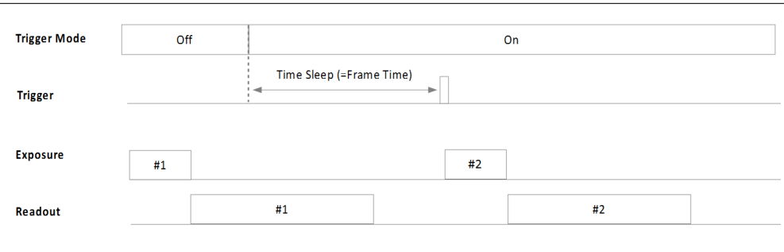
<Timing Diagram of Trigger Mode Changing>
4.4.2 Trigger Source
Define the source of the trigger signal. Applies when Trigger Mode is set to On.
▶Hardware trigger = 6 pin connector input
- Line1: Trigger input is received through pin 2 (Trigger +) and pin 5 (Trigger -). Voltage of trigger signal
The level range is from a minimum of 2.5V to a maximum of 24V.
- Line2, Line3: Trigger input is received through pin 3 (GPIO1) or pin 4 (GPIO2).
▶ Software trigger = Enter Host Software Trigger Command
Create a trigger inside the camera through the Software Trigger function. In this setting, ‘Exposure Mode’ is
Only ‘Timed’ shutter mode is supported.
※ Note
If you set ‘Counter Selector’ in the ‘Counter And Timer Control’ category to ‘Line Trigger’, the input from the camera will be triggered.
The total number of valid triggers is returned as ‘Counter Value’. This counter is initialized to 0 by Streaming Start.
It works.
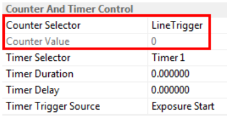
4.4.3 Trigger Delay
The trigger is delayed inside the camera by the time set in ‘Trigger Delay’ from the time of trigger input.
This is a function that sets it to work. If ‘Trigger Delay’ is set to a value other than 0, the trigger signal is delayed.
If a new trigger signal is input during the process, the delay for the existing trigger signal continues and the new trigger is
It will be ignored. In other words, if the delay time is greater than the trigger period, the frame rate may decrease due to missing trigger.
You can. For detailed timing diagram, please refer to the diagram on P.21<Timing Diagram of Trigger Signals>.
c.
4.4.4 Transfer Delay
At the stage of transmitting the image that has completed image pre-processing inside the camera, the image packet is
This function delays the start of transmission. When multiple camera videos are input from a single host, input
You can adjust the timing to distribute input points. Since the input value of the parameter is in Clock units, it is expressed as time.
Please refer to the formula below for conversion.
𝑇𝑟𝑎𝑛𝑠𝑓𝑒𝑟 𝐷𝑒𝑙𝑎𝑦(𝑛𝑠) = 𝑇𝑟𝑎𝑛𝑠𝑓𝑒𝑟 𝐷𝑒𝑙𝑎𝑦 𝑉𝑎𝑙𝑢𝑒 × 10𝑛𝑠
※ Note
1) This can only be set when the ‘Low-latency Mode Enable’ parameter is set to ‘False’.
2) For more detailed timing, please refer to the ‘Low-Latency Mode’ section.
4.5 Exposure Control
4.5.1 Exposure mode
This function allows the camera to select the exposure method. If ‘Trigger Source’ is set to ‘Line1’, ‘Timed’
and ‘Trigger Width’ can be set respectively. However, if ‘Trigger Source’ is set to ‘Software’
It only works with ‘Timed’ shutter.
In the ‘Timed’ shutter method, exposure occurs only for the time set in ‘Exposure Time’. The trigger is just
It serves to specify the starting point of exposure. On the other hand, the ‘Trigger Width’ shutter method uses the pulse of the trigger signal
The width becomes the effective exposure time.
<Timing Diagram of Pulse Width Trigger>
4.5.2 Exposure Time
Set the camera exposure time. This time only applies when ‘Exposure Mode is set to ‘Timed’.
Applies. In Freerun Mode, if the Exposure Time is longer than the Frame Period, the Frame Rate
It will decrease.
The actual exposure signal inside the camera is generated by the ‘HD’ timer. This ‘HD’ timer has a horizontal
Because it is related to Readout Size, generally the smaller the Image Width, the longer the period of the HD signal.
It will be shortened. Also, parameters related to video transmission bandwidth (ex. Pixel Format, Device Link Througput Limit
etc.), the period of the HD signal also changes.
※ Note
Set ‘Counter Selector’ in the ‘Counter And Timer Control’ category to ‘Exposure Start’ or ‘Exposure End’
Once set, the camera will return the start and end exposure counts as ‘Counter Value’. This counter is Streaming
It is initialized to 0 by Start.
※ Precautions
1) In MU-AxxxM(K) series cameras, there is an error between Exposure Time and actual exposure time. below
The time specified in the table is an absolute time, and when exposing each frame, additional exposure time other than Exposure Time is required.
It's time.
| MU-A040M/K -523 | MU-A160M/K | MU-A320M/K | MU-A320M/K -55 | MU-A500M/K -35 | MU-A121M/K | |
|---|---|---|---|---|---|---|
| Model | ||||||
| -226 | -118 | -23 | ||||
| Exposure Time | 14.26us | 14.26us | 13.73us | 13.73us | 13.73us | 14.26us |
| Offset |
2) Exposure start (and exposure end) may be delayed from the time the trigger signal reaches the camera.
There is. (Excluding hardware delay and ‘Line Debouncer Time’)
| Delay Type | Delay Time | |
| Exposure Start Delay | 3HD | |
| Exposure End Delay | 3HD+Exposure Time Offset |
| MU-A040M/K -523 | MU-A160M/K | MU-A320M/K | MU-A320M/K -55 | MU-A500M/K -35 | MU-A121M/K | |
|---|---|---|---|---|---|---|
| Model | ||||||
| -226 | -118 | -23 | ||||
| 3.259us | 3.919us | 5.778us | 11.393us | 13.414us | 14.02us | |
| 1HD |
※ The above 1HD time is based on the case of outputting the maximum frame rate under the maximum image size condition.
4.4.3 Sensor Shutter Mode (MU-A121R/L-31 and MU-A201R/L-18 models only)
‘Sensor Shutter Mode’ can be changed only for the two product groups that adopt Rolling Shutter-based image sensors.
There is. Basically, ‘Rolling shutter’ mode is supported, but if the subject moves quickly, the time difference may occur.
Image distortion may appear. On the other hand, because overlap is possible, the maximum frame rate of the product can be reached.
You can. It has the advantage of having uniform exposure time for all lines.
If you use the ‘Global Reset’ mode, which resets each line of the image at the same time, image distortion due to time difference is avoided.
It disappears. However, since all lines are exposed immediately after reset, the more you read in the vertical direction, the more
Exposure time becomes longer. And because Overlapping triggers are not supported, the Frame Rate is approximately
It can be reduced to less than half.
| Sensor Shutter Mode = Rolling | Sensor Shutter Mode = Global Reset |
※ Precautions
Proper Exposure Flash timing in ‘Rolling’ mode requires that the first and last lines are in common.
This is the time between exposures. Only then can the entire image line be uniformly illuminated.
4.5.4 Exposure Auto
This is a function that allows the camera to automatically adjust ‘Exposure Time’ to maintain the desired brightness.
Can be set when ‘ExposureMode’ is set to ‘Timed’. And ‘Auto Exposure Time Lower’
‘Exposure Time’ changes only in the time between ‘Limit’ and ‘Auto Exposure Time Upper Limit’.
| parameters | Setting value | Description | |||
|---|---|---|---|---|---|
| Exposure Auto | Off Once Continuous | Off: Set exposure time manually. Once: Adjust the exposure time just once to change the brightness value to the desired value. Continuous: Continuously adjusts the exposure time to achieve the desired brightness value. Maintain. | |||
| Auto Exposure Target | 0 to 255 (8-bit DN) | Set the brightness value desired by the user | |||
| Auto Exposure Time Lower Limit | Unit : us | Minimum value of variable shutter range | |||
| Auto Exposure Time Upper Limit | Unit : us | Maximum value of variable shutter range |
※ Precautions
1) If the Exposure Time is too short, a flickering image may be output due to flickering of lights, etc.
2) If ‘Exposure Time’ becomes longer than Frame Time to reach maximum brightness, Frame Rate
It may deteriorate.
4.6 Digital I/O Control
This function allows you to set camera external I/O signals. The input/output direction of each I/O is fixed, and the I/O
You can change the logical specifications of signals through a port.
| Item | Setting Value | Description | |||
|---|---|---|---|---|---|
| Line selector | Line1, Line2, Line3 | Select the Line for which you want detailed settings. | |||
| Line Mode | Input, Output | Line 1 is assigned to the camera's input line. Lines 2 and 3 can be set according to the purpose of GPIO1 and 2. | |||
| Line Inverter | True / False | True: Inverts the input/output phase of the line. False: Do not invert the phase of the line. |
| Line Status | True / False | Returns the current status of the selected Line. True means Logical High And False means Logical Low. |
| Line Source | Exposure Active, Timer Active, User Output1, User Output2 | Available only when ‘Line Mode’ is set to ‘Output’. Exposure Active: Flash signal activated during exposure time is output. c. Timer Active: ‘TimerDuration’ in the ‘Counter And Timer Control’ category Flash signal is output for the time set in . User Output1, User Output2: ‘User Output 1’ or ‘User Output 2’ value This is output. |
| User Output Value | True / False | Set the output value when ‘Line Source’ is set to User Output1. Yes. |
<Line Block Diagram>
4.6.1 Line Debouncer
This is a function to remove (debouncing) chattering noise from the camera's external trigger line. ‘Line Debouncer
Only signals that maintain the state for the time set in ‘Time’ are accepted as valid inputs. Line Debouncer
Since the Timer checks the state transition of the Trigger Line, the delay is delayed by the time set in ‘Line Debouncer Timer’.
You will receive a trigger input.
<Timing Diagram of Line Debouncer>
4.7 Timer Control
Timer Control allows you to change the settings of the strobe signal output outside the camera. ‘Trigger
When ‘Mode’ is Off (Freerun Mode), the time of generation of Timer Flash signal is set to exposure start or ‘Internal VD’.
You can select the ‘Start’ point. (Refer to the diagram <Timing Diagram of Freerun Mode>) When VD is initialized
Since the viewpoint is ahead of the shutter operation point, ‘Timer Delay’ is required to synchronize with the lighting.
You can do it.
On the other hand, when ‘Trigger Mode’ is On, the exposure start point or trigger signal detection point (state transition point) is determined.
You can select it as the Timer Flash creation location. If a Timer is created by an external trigger, set ‘Timer Delay’
This allows you to synchronize with the actual exposure section. (Refer to the <Timing Diagram of Trigger Signals> diagram)
| Item | Setting Value | Description | |||
|---|---|---|---|---|---|
| Timer Duration | 0 to 57,844,677 (Unit : us) | Defines the pulse width of the Timer Flash signal output to Line2. New year The default value of 0 means Off. | |||
| Timer Delay | 0 to 57,844,677 (Unit : us) | Defines the delay time for the Timer Flash signal output to Line2. New year A default value of 0 means no delay. | |||
| Timer Trigger Source | Exposure Start, Acquisition Trigger, Internal VD Start PWC Trigger Start | Select when the Flash Timer starts to occur. Exposure Start: When exposure begins Acquisition Trigger: Input point of external trigger Internal VD Start: Internal VD reset point in Freerun mode PWC Trigger Start: PWC Trigger signal converted inside the camera. |
As mentioned in ‘Exposure Control’ in Section 4.5, the trigger signal input to the camera and the actual signal to the image sensor
There is a certain time delay until exposure. This delay time (Exposure Start Delay) is ‘Timer Trigger Source’.
When set to ‘Exposure Start’, a negative value ‘Timer Delay’ can also be used. negative number
If you enter a signed real number value into ‘Timer Delay’, it will delay up to 3HD hours from the actual exposure time to the sensor.
The timer signal generation time can be advanced. (Refer to the <Timing Diagram of Timer Control> diagram)
<Timing Diagram of Timer Control>
4.8 Counter Control
The series of processes in which the camera receives trigger input, exposes, and transmits images can be monitored with a step-by-step counter.
This is a feature that can be used. Additionally, signal input that exceeds the camera specifications, such as trigger input with a cycle faster than the frame speed.
You can also check the power.
| Item | Setting Value | Description |
|---|---|---|
| Counter Selector | LineTrigger Exposure Start Exposure End FrameEnd ExposureOver- Trigger ReadOutOver- Trigger | Monitors whether the camera operates in response to a trigger signal input from an external source. is a function. LineTrigger: Total number of external triggers and software triggers entered. Exposure Start: The number of times the actual exposure started. Exposure End: The number of times the actual exposure has ended. FrameEnd: Number of frames read out from the sensor. ExposureOverTrigger: Number of new triggers entered during Exposure. Refer to the <Timing Diagram of ‘Exposure Over Trigger’> diagram. ReadOutOverTrigger: Number of times exposure of a new trigger has ended during readout. Refer to the <Timing Diagram of ‘Readout Over Trigger’> diagram. However, Readout Overtrigger is counted only when Trigger Mask Enable = On. (Seconds The status is set to On) |
| Counter Value | (Read Only) | All counters at the time of ‘Counter Value Reset’ command input or Acquisition Start Values are initialized to 0. |
| <Timing Diagram of ‘Exposure Over Trigger’> 1) This type can occur when Exposure Mode = Timed. 2) #3 Trigger signal is ignored because it was input during Timed Shutter exposure of #2 Trigger signal. | ||
| <Timing Diagram of ‘Readout Over Trigger’> 1) This type can appear when Exposure Mode = Timed and Trigger Width. 2) #3 Trigger signal was input with a cycle faster than the minimum cycle of the camera. So the camera is #3 It treats the trigger as noise or a bad trigger and transmits the image of #2 without stopping. |
4.9 Chunk Data Control
Chunk data is tagged data that can be grouped within blocks of data to transmit metadata.
This is a data block. Each chunk consists of chunk data and a trailing tag, and the tag contains a ‘unique chunk identifier.
(Unique Chunk Identifier, CID)’ and ‘Chunk data length’. This Chunk Data is USB3Vision
Transmitted in accordance with Standard 1.1.
| Item | Setting Value | Description |
|---|---|---|
| Chunk Mode Active | True / False | Decide whether to transmit chunk data. When ‘True’ is set Right, the parameters specified in the Chunk Selector are used every frame. Everything is sent as chunk. |
| Chunk Selector | Frame Counter, Time Stamp, Gain, Exposure Time, Counter Value, Device Temperature, Line Status All | Frame Counter: Unique number of the current image being transmitted. c. The counter for the first image is 0, and after each frame is transmitted, Increases by 1. Time Stamp: Timer specified by the USB3Vision standard. It increases in units of 1 tick (10ns). Gain: Various gain values of the current image being transmitted at once. Sending. Exposure Time: Exposure Time of the current image being transmitted Send . Counter Value: Various counter values at the time of image transmission returns. Device Temperature: Device temperature at the time of image transmission Returns a value. Line Status All: Shows all line status at the time of image transmission. Burn it. |
| Chunk Enable | True / False | Chunk data for the chunk specified in the Chunk Selector This is a function that determines participation. Chunk Mode If Active is set to ‘True’, Chunk Enable Only chunks designated as ‘True’ are transmitted. |
Chunk data is sent along with the last payload packet of the image. Unique chunk identifier for each chunk
Please refer to the table below for (Unique Chunk Identifier, CID) and data size information.
| Chunk Selector | Chunk Length | Chunk Data | CID |
|---|---|---|---|
| Image | Payload Size | Image Data | 0x617D18DB |
| Frame Counter | 8Byte | Frame Counter : Offset 0, length 4Byte Reserved : Offset 4Byte, length 4Byte | 0x4652414D |
|---|---|---|---|
| Time Stamp | 8Byte | Time Stamp : Offset 0, length 4Byte Reserved : Offset 4Byte, length 4Byte | 0x54494D45 |
| Gain | 16Byte | Digital Gain : Offset 0, length 2Byte Analog Gain : Offset 2Byte, length 2Byte Gain Red : Offset 4Byte, length 2Byte Gain Green : Offset 6Byte, length 2Byte Gain Blue : Offset 8Byte, length 2Byte Reserved : Offset 10Byte, length 6Byte | 0x4741494E |
| Exposure Time | 8Byte | Exposure Time : Offset 0, length 4Byte Reserved : Offset 4Byte, length 4Byte | 0x4558504F |
| Counter Value | 24Byte | External Trigger Start : Offset 0, length 4Byte Exposure Start : Offset 4Byte, length 4Byte Exposure End : Offset 8Byte, length 4Byte Frame End : Offset 12Byte, length 4Byte Exposure Start Missed : Offset 16Byte, length 4Byte Exposure End Missed : Offset 20Byte, length 4Byte | 0x4F544845 |
| Device Temperature | 8Byte | Device1 Temperature : Offset 0, length 4Byte Reserved : Offset 4Byte, length 4Byte | 0x54454D50 |
| Line Status All | 8Byte | Line 1 : Offset 0, bit[0] Line 2 : Offset 0, bit[1] Line 3 : Offset 0, bit[2] Line 4 : Offset 0, bit[3] Line 5 : Offset 0, bit[4] Line 6 : Offset 0, bit[5] Line 7 : Offset 0, bit[6] Line 8 : Offset 0, bit[7] Reserved : Offset 1Byte, length 7Byte | 0x4C494E45 |
4.10 Event Control
Event notification is a function that sends an event packet from the camera to the host in each specific event situation. image
Event Packet is transmitted through a channel different from the transmission channel.
Events occur in cameras in real time, but if packet transmission delays occur due to host circumstances, Event
There is also a possibility that the actual receipt of the packet may be delayed or missed. Up to 128 inside the camera
Events can be loaded, but if transmission is delayed any longer, newly generated events will be missed.
| Item | Setting Value | Event ID | Description |
|---|---|---|---|
| Event Selector | Exposure End, Over Trigger Start Missed Over Trigger End Missed Trigger Start | 0x0004 0x5005 0x5006 0x5007 | Exposure End: An event occurs when exposure ends. Over Trigger Start Missed: New start due to over trigger during exposure. An event occurs when a luck trigger is input. Over Trigger End Missed: Image Readout by Over Trigger If exposure ends due to a new trigger, an event occurs. Yes. |
| Device Temperature Warning Device Temperature Critical | 0x501E 0x501F | Trigger Start: An external trigger signal or software trigger starts the camera. An event occurs when it is recognized. Device Temperature Warning: The temperature of the camera exceeds 𝑇. 𝑡ℎ𝑟1 In this case, an event occurs only once. Device Temperature Critical: When the camera’s temperature exceeds 𝑇 𝑡ℎ𝑟2 An event occurs only once. | |
|---|---|---|---|
| Event Notification | Off, On | Enable or disable notification for Event of each Selector. c. |
4.11 Analog Control
You can change the analog and digital characteristics of the video signal. Mainly changing properties for image pixels
The functions you can do are listed.
<Block Diagram of Analog Control>
| Item | Setting Value | Description | |||
|---|---|---|---|---|---|
| Gain Selector | All, DigitalAll | Select the Gain to be set. Each of the two gains is independent of each other With Gain, you can set different values at the same time. - All : Analog Gain - Digital All : Digital Gain | |||
| Gain Raw | All : Analog Gain - Global Shutter : 0 to 276 - Rolling Model : 0 to 270 DigitalAll : Digital Gain (Common) 0 to 8191 | You can apply the desired gain as a raw value. | |||
| Gain Abs | All : Analog Gain - Global Shutter : 1 to 24x - Rolling Model : 1 to 22.39x DigitalAll : Digital Gain (Common) 1 to 8.99x | You can apply the desired gain value as a multiplier. Brightness of original image You can enter a relative magnification by specifying 1x. ※ Reference: dB conversion formula Gain dB = 20 * log(GainAbs) _ |
| Gain Auto | Off, Once, Continuous | You can set the AGC (Automatic gain control) function. At this time Target brightness value is defined in ‘Auto Exposure Target’. Off: Set Gain manually. Once: Adjust the gain value just once to change it to the desired brightness value. c. Continuous: Continuously adjust the gain value to maintain the desired brightness value. City maintains. |
| Auto Gain Lower Limit | Unit : dB | Minimum value of variable gain range |
| Auto Gain Upper Limit | Unit : dB | Maximum value of variable gain range |
| Black Level Selector | All, DigitalAll | Select the Black Level to set. Each of the two BlackLevels is As an independent Offset, different values can be set at the same time. - All : Analog Offset - Digital All : Digital Offset |
| Black Level Raw | All : Analog Offset -Global Shutter : 0 to 255 -Rolling Model : 0 to 255 DigitalAll : Digital Offset (Common) 0 to 1023 | Change the Analog / Digital Black Level value. You can adjust the DC Offset of the image signal. |
| Pattern Noise Removal | Execute | Removes pattern-shaped noise. (Only for MU-A121R/L-31 and MU-A201R/L-18 models) |
| Noise Reduction Filter | False, True | Activate the Noise Reduction function. Sharpness may decrease somewhat You can. |
4.11.1 Gain, Gain Auto
While Gain can change the sensitivity of the image without deteriorating the frame rate, it also reduces image noise.
may increase. The gain of the camera is composed of Analog Gain and Digital Gain respectively, and ‘Gain
You can select through ‘Selector’.
Gain Auto is a function that automatically adjusts the gain value to the target brightness by the Auto Gain Control algorithm.
The range of gain values that change while Gain Auto is running is ‘Auto Gain Lower Limit’ and ‘Auto Gain Upper’.
Limited by ‘Limit’.
※ Precautions
Priority for brightness changes when ‘Gain Auto’ is used simultaneously with the ‘Exposure Auto’ function
▶ When the brightness becomes brighter: Exposure Time increases first, and Gain increases when the limit is reached.
▶ When brightness becomes dark: Gain decreases first, and Exposure Time decreases when the limit is reached.
4.11.2 Black Level
‘Black Level’ is a function that allows you to set the offset of the camera’s sensitivity. ‘Black Level’ is about Gain and Ma.
Likewise, it is composed of Analog Black Level and Digital Black Level, and can be adjusted through ‘Black Level Selector’.
You can choose.
4.11.3 Gamma
This function is used to adjust Gamma Correction. You can correct the contrast of camera images.
<ITE ‘GrayScale ChartⅡ (y=0.45)’>
※ Precautions
- The Gamma Correction function cannot be used simultaneously with LUT. When activating LUT and Gamma simultaneously
Right, the function activated first is automatically disabled.
4.11.4 Pattern Noise Removal (MU-A121R/L-31 and MU-A201R/L-18 models only)
This feature can be improved when noise similar to a mosaic pattern appears in the image. user's
Sensitivity imbalance between mosaic patterns or specific color channels after setup for the environment (lighting, lenses, etc.) is completed.
If this phenomenon occurs, you can self-correct it. Immediate correction through ‘Pattern Noise Removal’ command
It is possible.
※ Precautions
1) To perform ‘Pattern Noise Removal’, you must grab the image.
2) After correcting the video by entering a command, you must save the correction value to the camera using the ‘Userset Save’ command.
I do.
4.11.5 Noise Reduction Filter
This function allows you to reduce video noise through a noise filter. When activated, it is reflected from the next frame.
The sharpness of the video may deteriorate somewhat.
| Noise Reduction Filter = False | Noise Reduction Filter = True |
4.12 Balance Ratio Control
This function is used to correct the color balance of color cameras. To achieve a balance of sensitivity between color channels to the light source,
Correct it. If the color temperature of the light source changes, new calibration is required.
| Item | Setting Value | Description | |||
|---|---|---|---|---|---|
| Balance Ratio Selector | Red, Green, Blue | Select a color to adjust Color Gain. | |||
| Balance Ratio | 0 to 7.9 | Adjust the gain value of the selected color. The unit is magnification. (Default: 1x) | |||
| Balance White Auto | Off, once, Continuous | Once: Adjusts the color gain only once to adjust the white balance. Continuous: Maintains white balance by continuously adjusting color gain. I will give it to you. |
※ Precautions
1) Pixels outside of a certain brightness range are judged as noise. Also, even if there is a strong bias toward a specific color,
Excluded from Auto White Balance calculation. Please refer to the criteria below for detailed conditions.
1. |R-Y| < 160DN
2. |B-Y| < 160DN
3. -160DN < (B-Y) + (R-Y) < 160DN
2) After color correction, the correction value must be saved in the camera’s PROM using the ‘Userset Save’ Command.
4.13 User Set Control
This function is used to save or load the values of parameters set by the user. Always change during Grab.
Since there are parameters that should not be changed, Userset Load is performed in Acquisition Stop state.
I recommend doing so.
| Item | Setting value | Description | |
|---|---|---|---|
| User Set Selector | Default Userset1 Userset2 Userset3 | Default: Settings saved in the camera as default. user Cannot save. Userset1/2/3: Users can save/load at will. power Even when turned off/on, the saved settings are maintained. | |
| User Set Load | Execute | Loads the settings of the selected Userset Selector item. | |
| User Set Save | Execute | Saves the settings in the selected Userset Selector item. |
4.14 LUT Control
The LUT (Look Up Table) function matches the digitally converted pixel value to the table 1:1 with the input value and output value.
This is a conversion function. Pixel value is determined by the LUT Value (Output Image) defined for each Index (Input Image) in the table.
It will be replaced. For color models, the luminance component is loaded into the LUT memory.
| Item | Setting value | Description | |
|---|---|---|---|
| LUT Enable | Disable, Enable | Determines whether to activate the LUT function. | |
| LUT Index | 0 to 4095 | Adjust the Index value of the LUT. This is the input pixel value of the table. | |
| LUT Value | 0 to 4095 | Adjust the value of the corresponding LUT Index. Table's output pixel value It is. |
Ex) If you use a table with values in the form y=2x, low-light pixels can see an improvement in sensitivity, while high-light pixels can see an improvement in sensitivity.
Pixels become saturated, resulting in loss of dynamic range.
| Index | 0 | 1 | 2 | 3 | 4 | 5 | … | 1024 | … | 2047 | 2048 | … | ||||||||||
|---|---|---|---|---|---|---|---|---|---|---|---|---|---|---|---|---|---|---|---|---|---|---|
| Value | 0 | 2 | 4 | 6 | 8 | 0xA | … | 0X800 | … | 0xFFE | 0xFFF | 0xFFF |
※ Precautions
- The LUT function cannot be used simultaneously with Gamma Control. When activating LUT and Gamma simultaneously,
The function activated first is automatically disabled.
4.15 Defect Pixel Correction
This function allows you to manage the camera’s defect pixels. Compensation for defective pixels when the product is shipped from the factory
This is done. However, the user can additionally define and correct pixels that he or she considers to be bad pixels.
Yes. Up to 128 dead pixels for each camera can be stored in Flash PROM.
| Item | Setting Value | Description |
|---|---|---|
| Defect Filter Enable | False, True | Select whether to correct Defect Pixel. |
| Defect Filter Test Mode Select | Off, Mark White, Mark Black, Mark White with Black Background | This is an option to display corrected defect pixels in the video. |
| Defect Pixel Replacement Count | 1 to 256 | This is the number of defective pixels to be corrected per camera. |
| Defect Pixel Index | 0 to 255 | This is the Index of the Defect Pixel to be corrected. |
| Defect Pixel X Coordinate | 0 to WidthMax - 1 | Enter the X-axis coordinate value of the pixel to be corrected. Image Pixel Coordinates start from 0. |
| Defect Pixel Y Coordinate | 0 to HeightMax - 1 | Enter the Y-axis coordinate value of the pixel to be corrected. image pixel Coordinates start from 0. |
| Defect Pixel X Replacement | Excute | The entered correction values are immediately applied to the camera. |
※ Precautions
- After correction, you must enter the ‘Userset Save’ command to save it to the camera.
Ex) When 20 defect pixels are corrected at factory shipment, the user defines two additional pixels.
| +1 +1 | Defect Pixel Replacement Count | Defect Pixel Index | X Coordinate | Y Coordinate | |||
|---|---|---|---|---|---|---|---|
| … | … | … | … | ||||
| 19th | 18 | … | … | ||||
| 20th | 19 | … | … | ||||
| 21th | 20 | 156 | 1131 | ||||
| 22th | 21 | 208 | 611 |
Factory Defined
| User Defined 1 |
| User Defined 2 |
4.16 Low-Latency Mode
Image data pre-processed in FPGA is applied to an Image Buffer (Frame Buffer) of approximately 512MB.
You can select the loading method. The initial value is ‘Low-latency Mode Enable’ is ‘True’.
This is a method of transmitting images as soon as the Packet Size is entered into the Buffer. On the other hand, ‘Low-latency
If ‘Mode Enable’ is set to ‘False’, it becomes ‘Full-Block Mode’ and all image frames are
Transmission must be buffered.
The time and timing for imaging, readout, and preprocessing are the same for both modes, but transmission to the host is the same.
The starting timing is different. In other words, there is a difference in the total time from trigger input to host reception.
Yes.
| Low-Latency Mode | Full-Block Mode | |
| Low-Latency Mode Enable _ _ Parameter | True | False |
| When to start transmission | When loaded as per Packet Size | When loading all frames |
| Transfer Delay availability | Not available | available |
<Timing Diagram of ‘Low-Latency Mode’>
<Timing Diagram of ‘Full-Block Mode’>
If the host needs to receive video from multiple cameras, the best way is to set up a dedicated port for each port.
It uses a multi-port host card with chipset attached. If not, each camera
Packet transmission must be distributed so as not to exceed the maximum bandwidth of the host (receiver). For example
In contrast, by applying different ‘Transfer Delay’ in ‘Full-Block Mode’, the image transmission time can be distributed.
Yes. In this case, the host receives images sequentially.
※ Precautions
1) The ‘Low-latency Mode Enable’ parameter is applied immediately when changed. However, it must be changed when Acquisition Stops.
Yes.
2) The ‘Transfer Delay’ function can only be set when ‘Low-latency Mode Enable’ is ‘False’.
3) If the host PC consumes a lot of CPU resources due to image processing, etc., camera transmission may also be affected.
Yes.
4.17 Color Transformation Control
Color Transformation is a matrix that can apply gain and offset to each R, G, and B channel.
| Item | Setting Value | Description |
|---|---|---|
| Color Transformation Enable | True / False | Activate the Color Transfermation function. . |
| Color Trasformation Value Selector | Gain 00, Gain 01, Gain 02, Gain 10, Gain 11, Gain 12, Gain 20, Gain 21, Gain 22, | Gain 00: This refers to the value of (0,0) on the Color Matrix. Gain 01: This refers to the value of (0,1) on the Color Matrix. Gain 02: This refers to the value of (0,2) on the Color Matrix. Gain 10: This refers to the value of (1,0) on the Color Matrix. Gain 11: This refers to the value of (1,1) on the Color Matrix. Gain 12: This refers to the value of (1,2) on the Color Matrix. Gain 20: This refers to the value of (2,0) on the Color Matrix. Gain 21: This refers to the value of (2,1) on the Color Matrix. Gain 22: This refers to the value of (2,2) on the Color Matrix. |
| Offset0, 1, 2 | Offset0,1,2: Refers to the offset value at the end of the color matrix. | |
| Color Transformation Value | This is the Gain or Offset value selected within the color conversion matrix. |
This function is used for color correction when the pixel value output from the image sensor differs from the actual product.
c. For each R, G, and B channel, the parts with insufficient sensitivity are multiplied or added, and the parts with excess sensitivity are divided or added.
You can take it out. Additionally, it can be reproduced by applying pre-defined matrix values that meet some color standards.
There is also.
4.18 Device Temperature State
The temperature status of MU-AxxxM(K) series products is divided into three stages in the ‘Device Temperature State’ parameter.
Uh, we provide. When you press the ‘Temperature Update Feature’ command, the ‘Device Temperature State’ value is immediately changed.
It returns.
‘Normal’ means a stable temperature. All elements of the camera are operating smoothly.
c. ‘Warning’ indicates that the product’s heat generation is somewhat high. The moment it exceeds the reference temperature of 𝑇𝑡ℎ𝑟1
Generates a ‘Device Temperature Warning’ Event to notify the host of changes in ‘Device Temperature State’
(If Event is set. Refer to Section 4.10 Event Control.) Image acquisition is possible, but through heat dissipation.
This situation requires lowering the temperature of the camera.
If the product temperature continues to increase, the moment it reaches the second threshold temperature, 𝑇𝑡ℎ𝑟2, ‘Device
A ‘Temperature Critical’ Event occurs. (If the Event is set. Refer to Section 4.10 Event Control.)
At this time, heat dissipation occurs on its own to protect the product itself. Camera Acquisition
If in the Enable state, the readout of the image sensor is arbitrarily stopped and the test moves to the left at the same time.
Outputs the pattern image in trigger asynchronous mode.
Image Data of Device Temperature Critical State
If the temperature of the product decreases due to the camera's own heat dissipation operation or external heat dissipation measures,
‘Device Temperature State’ is also updated. It becomes more than 4℃ lower than the standard temperature of ‘Critical’ state, 𝑇𝑡ℎ𝑟2.
If so, the status changes to ‘Warning’. In this case, the image data that was replaced with the Test Pattern has already been
The sensor image is automatically restored. Also, at this time, it is judged to be in a cooling state, so the ‘Device
It does not generate a ‘Temperature Warning’ Event. Likewise, the standard temperature in the ‘Warning’ state is
When it becomes more than 4℃ lower than 𝑇𝑡ℎ𝑟1, it returns to the ‘Normal’ state.
| Available Model | Device Temperature State | Threshold Temperature |
|---|---|---|
| MU-A040M(K)-523 MU-A160M(K)-226 MU-A320M(K)-118 MU-A320M(K)-55 MU-A500M(K)-35 MU-A121M(K)-23 | Warning State (𝑇 ) 𝑡ℎ𝑟1 | 60℃ |
| Critical State (𝑇 ) 𝑡ℎ𝑟2 | 75℃ |
5. Camera Appearance
Mono Camera
Color Camera
# APPENDIX.A
Camera Parameter List
| Category | Feature Name | Type | Acces s Mode | Description |
|---|---|---|---|---|
| Device Control | DeviceScanType | Enumerati on | RO | Scan type of the sensor. |
| DeviceVendorName | StringReg | RO | Name of the manufacturer of the device. | |
| DeviceModelName | StringReg | RO | Model of the device. | |
| DeviceManufacturerInfo | StringReg | RO | Manufacturer information about the device. | |
| DeviceVersion | StringReg | RO | Version of the device. | |
| DeviceID | StringReg | RO | User-programmable device identifier. | |
| DeviceUserID | StringReg | RW | User-programmable device identifier. | |
| DeviceLinkThroughputLimit | Integer | RW | Limits the maximum bandwidth of the data that will be streamed out By the device on the selected Link.(Unit : Byte per second) | |
| DeviceFirmwareVersion | StringReg | RO | Device Firmware Version | |
| DeviceTemperatureSelector | Enumerati on | RW | Selects the location within the device, where the temperature Will be measured. | |
| DeviceTemperature | Float | RO | Device temperature in degrees Celsius (C). | |
| TemperatureUpdateFeature | Command | WO | Device Temperature Update Feature. | |
| Device Temperature State | Enumerati on | RO | Represents Device Temperature State. | |
| U3VDeviceCapability | Integer | RO | Describes Device Capability. | |
| UserNameAvailable | Boolean | RO | Set if User Defined Name available. | |
| AccessPrivilegeAvailable | Boolean | RO | Set if Heartbeat/Access Privilege is available. | |
| MessageChannelSupported | Boolean | RO | Set if the device supports a Message Channel. | |
| TimestampSupported | Boolean | RO | Set if the device supports a timestamp register. | |
| StringEncoding | Integer | RO | String Encoding of the BRM. | |
| FamilyRegisterAvailable | Boolean | RO | Set if the device supports the Family Name register. | |
| SBRMSupported | Boolean | RO | Set if the device supports a SBRM. | |
| EndianessRegistersSupporte d | Boolean | RO | Set if the device supports the Protocol Endianess and Implementation Endianess registers. | |
| WrittenLengthFieldSupporte d | Boolean | RO | Set to 1 if the device sends the length written field in the SCD section of _ the WriteMemAck command. | |
| DeviceStatusInfo | Integer | RO | Describes Device Status Infomation. | |
| DeviceReset | Command | WO | Resets the device to its power up state. | |
| DeviceSleepMode | Enumerati on | RW | Controls Sleep Activation. When 'Soft Sleep' activated, the sensors are reset. 'Deep sleep' resets both sensors and the FPGA. When returning to Normal Mode('Disable'), It take several seconds. | |
| ImageFormat Control | SensorWidth | IntReg | RO | Effective width of the sensor in pixels. |
| SensorHeight | IntReg | RO | Effective height of the sensor in pixels. | |
| WidthMax | IntReg | RO | Maximum width (in pixels) of the image. The dimension is calculated after horizontal binning, decimation or any other function changing The horizontal dimension of the image. | |
| HeightMax | IntReg | RO | Maximum height (in pixels) of the image. This dimension is calculated after vertical binning, decimation or any other function changing The vertical dimension of the image. | |
| Width | Integer | RW | Width of the Image provided by the device (in pixels). | |
| Height | Integer | RW | Height of the image provided by the device(in pixels). | |
| OffsetX | Integer | RW | This value sets the X offset (left offset) for the area of interest in pixels. | |
| OffsetY | Integer | RW | This value sets the Y offset (top offset) for the area of interest in pixels. | |
| SensorShutterMode | Enumerati on | RW | Sets the shutter mode of the device. |
| AdcBitDepth | Enumerati on | RW | Selects which Analog to Digital Converter(ADC) output bits from the image sensor. | |
|---|---|---|---|---|
| PixelFormat | Enumerati on | RW | Format of the pixel provided by the device. It represents all the information provided by PixelCoding, PixelSize, PixelColorFilter Combined in a single feature. | |
| TestPattern | Enumerati on | RW | Selects the type of test pattern that is generated by the device as Image source. | |
| Acquisition Control | AcquisitionMode | Enumerati on | RW | Sets the acquisition mode of the device. It defines mainly the number of Frames to capture during an acquisition and the way the acquisition stops. |
| AcquisitionStart | Command | RW | Starts the Acquisition of the device. The number of frames captured is specified by AcquisitionMode. | |
| AcquisitionStop | Command | RW | Stops the Acquisition of the device at the end of the current Frame. It is mainly used when AcquisitionMode is Continuous but can be used in any acquisition mode. | |
| AcquisitionFrameCount | Integer | RW | Number of frames to acquire in MultiFrame Acquisition mode. | |
| TriggerSelector | Enumerati on | RW | Selects the type of trigger to configure. | |
| TriggerMode | Enumerati on | RW | Controls if the selected trigger is active. | |
| TriggerSoftware | Command | RW | Generates an internal trigger. TriggerSource must be set to Software. | |
| TriggerSource | Enumerati on | RW | Specifies the internal signal or physical input Line to use as the trigger Source. The selected trigger must have its TriggerMode set to On. | |
| TriggerActivation | Enumerati on | RO | Specifies the activation mode of the trigger. | |
| TriggerOverlap | Enumerati on | RW | Specifies the type trigger overlap permitted with the previous frame. This defines when a valid trigger will be accepted (or latched) for a new frame. | |
| TriggerDelay | Float | RW | Specifies the delay in microseconds (us) to apply after the trigger reception before activating it. | |
| TransferDelay | Integer | RW | Specifies the delay to apply after the image readout from sensor before transfer. This can be used as a crude flow-control mechanism if the application or the network infrastructure cannot keep up with the packets coming from the device. | |
| ExposureMode | Enumerati on | RW | Sets the operation mode of the Exposure (or shutter). | |
| ExposureTime | Float | RW | Sets the Exposure time (in microseconds) when ExposureMode is Timed and ExposureAuto is Off. This controls the duration where the Photosensitive cells are exposed to light. | |
| ExposureAuto | Enumerati on | RW | Sets the automatic exposure mode when ExposureMode is Timed. The exact algorithm used to implement this control is device-specific. | |
| AutoExposureTarget | Integer | RW | When the auto exposure is "once" or "continuous", the the exposure Time will be changed, depending on the target value. | |
| AutoExposureTimeLowerLim it | Float | RW | The minimum exposure time abs of Auto Exposure. Not available in Digital gain mode. (Unit : us) | |
| AutoExposureTimeUpperLim it | Float | RW | The maximum exposure time abs of Auto Exposure. Not available in Digital gain mode.(Unit : us) | |
| AutoGainLowerLimit | Float | RW | The minimum gain of Auto Gain Ratio. | |
| AutoGainUpperLimit | Float | RW | The maximum gain of Auto Gain Ratio. | |
| AcquisitionFrameRateEnable | Enumerati on | RW | Controls the acquisition rate (in Hertz) at which the frames are captured. | |
| AcquisitionFrameRate | Float | RW | Controls the acquisition rate (in Hertz) at which the frames are captured. | |
| ResultingFrameRate | Float | RO | Resulting frame rate (in Hertz) that maximum allowed frame acquisition. | |
| DigitalIO Control | LineSelector | Enumerati on | RW | Selects the physical line (or pin) of the external device connector to Configure. |
| LineDebouncerTime | Float | RW | Line Debouncer Time. Unit : us | |
| LineMode | Enumerati on | RO | Controls if the physical Line is used to Input or Output a signal. | |
| LineInverter | Boolean | RW | Controls the invertion of the signal of the selected input or output Line. | |
| LineStatus | Boolean | RO | Returns the current status of the selected input or output Line. | |
| LineStatusUpdateFeature | Command | WO | Line Status Update Feature. | |
| LineSource | Enumerati on | RW | Selects which internal acquisition or I/O source signal to output on the Selected Line. LineMode must be Output. | |
| UserOutputSelector | Enumerati on | RW | Selects which bit of the User Output register will be set by serOutputValue. | |
| UserOutputValue | Boolean | RW | Sets the value of the bit selected by UserOutputSelector. | |
| CounterValueReset | Command | RW | Counters are reset immediately. |
| CounterandTimer Control | CounterEventSource | Enumerati on | RW | Select the events that will be the source to increment the Counter. |
|---|---|---|---|---|
| CounterValue | Integer | RO | Reads the current value of the selected Counter. All Counters are reset when forced Counter Value Reset Command. | |
| CounterUpdateFeature | Command | WO | Counter Update Feature. | |
| TimerSelector | Enumerati on | RW | mer to configure. | |
| TimerDuration | Float | RW | Sets the duration (in microseconds) of the Timer pulse. | |
| TimerDelay | Float | RW | Sets the duration of the delay to apply at the reception of a trigger before to start the Timer. | |
| TimerTriggerSource | Enumerati on | RW | Selects the he trigger to start the Timer. | |
| Event Control | EventSelector | Enumerati on | RW | Selects which Event to signal to the host application. |
| EventNotification | Enumerati on | RW | Activate or deactivate the notification to the host application of the occurrence of the selected Event. | |
| Analog Control | GainSelector | Enumerati on | RW | Selects which Gain is controlled by the various Gain features. Do not use both gain at the same time. |
| GainRaw | Integer | RW | Controls the selected gain as an absolute physical value of Sensor. This is an amplification factor applied to the video signal. | |
| GainAbs | Float | RW | Controls ratio of the selected gain of Sensor. | |
| GainAuto | Enumerati on | RW | Sets the automatic gain control (AGC) mode. The exact algorithm used to implement AGC is device-specific. | |
| BlackLevelSelector | Enumerati on | RW | Selects which Black Level is controlled by the various Black Level features. | |
| BlackLevelRaw | Integer | RW | Controls the analog black level as an absolute physical value of Sensor. This represents a DC offset applied to the video signal. | |
| BalanceRatioSelector | Enumerati on | RW | Selects which Balance ratio to control. | |
| BalanceRatio | Float | RW | Controls ratio of the selected color component to a reference color Component. It is used for white balancing. | |
| BalanceWhiteAuto | Enumerati on | RW | Controls the mode for automatic white balancing between the color Channels. The white balancing ratios are automatically adjusted. | |
| BalanceUpdateFeature | Command | - | BalanceRatio and BalanceWhiteAuto Update Feature. | |
| GammaEnable | Boolean | RW | Activates the Gamma Correction. Gamma correction cannot be used simultaneously with the LUT. | |
| Gamma | Float | RW | Controls the gamma correction of pixel intensity. | |
| PatternNoiseRemoval | Command | RW | Pattern Noise Removal Auto. Limited to some products only. | |
| NoiseReductionEnable | Boolean | RW | Noise Reduction Filter. | |
| LUT Control | LUTEnable | Boolean | RW | Activates the selected LUT. LUT can not be used simultaneously with the Gamma correction. |
| LUTIndex | Integer | RW | Control the index (offset) of the coefficient to access in the selected LUT. | |
| LUTValue | IntReg | RW | Returns the Value at entry LUTIndex of the LUT selected by LUTSelector | |
| LUTValueAll | Register | RW | Accesses the entire content of the selected LUT in one chunk access | |
| DefectPixel Correction | DefectFilterEnable | Boolean | RW | Enables or Disables the Defect Pixel Filter. |
| DefectFilterTestMode | Enumerati on | RW | Defect Filter Test Mode Select. | |
| DefectPixelReplaceCount | Integer | RW | Defect Pixel Replace Count. | |
| DefectPixelIndex | Integer | RW | Defect Pixel Index. | |
| DefectXCoordinate | Integer | RW | Defect Pixel X Coordinate. | |
| DefectYCoordinate | Integer | RW | Defect Pixel Y Coordinate. | |
| DefectPixelReplaceExecute | Command | RW | Defect Pixel Replace Execute. | |
| FlatField Correction | FFCEnable | Enumerati on | RW | Activate or Deactivate Flat Field Correction Function. |
| BlackCalibration | Command | WO | Black Calibration. | |
| WhiteCalibration | Command | WO | White Calibration. | |
| FFCSaveLoadFlashSelect | Integer | RW | FFC Save Load Flash Select. | |
| FFCSave | Command | RW | FFC Save. | |
| FFCLoad | Command | RW | FFC Load. |
| TransportLayer Control | FIDonPixelMode | Enumerati on | RW | Some Pixels are replaced with Frame ID(FID). The FID value starts from the coordinates of Pixel(0,0) and the counter begins from 0. Limited to some products only. |
|---|---|---|---|---|
| LowLatencyEnable | Boolean | RW | Minimize image transfer latency for fastest mode. | |
| SITransferSize | Integer | RW | This Parameter contains the size of regular payload bulk transfers.("equally sized transfers") | |
| PayloadSize | Integer | RO | Provides the number of bytes transferred for each image or chunk on the stream channel. This includes any end-of-line, end-of-frame statistics or other stamp data. This is the total size of data payload for a data block. | |
| PayloadTransferSize | Integer | RO | This Parameter contains the size of regular payload bulk transfers. | |
| PayloadTransferCount | Integer | RO | This Parameter constains the number of regular payload data bulk transfers. | |
| PayloadFinalTransfer1Size | Integer | RO | This Parameter constains the size of the Final Transfer 1 payload bulk transfer. | |
| PayloadFinalTransfer2Size | Integer | RO | This Parameter constains the size of the Final Transfer 2 payload bulk transfer. | |
| GenCPVersionMajor | Integer | RO | Major version of the specification. | |
| GenCPVersionMinor | Integer | RO | Minor version of the specification. | |
| U3VMaxDeviceResponseTim e | Integer | RO | Max Resonse Time in ms. | |
| U3VMessageChannelID | Integer | RW | Channel ID Used For The Message Channel. | |
| U3VVersionMajor | Integer | RO | U3V Version. | |
| U3VVersionMinor | Integer | RO | U3V Version. | |
| U3VCPCapability | Integer | RO | Indicates additional features on the control channel. | |
| U3VCPSIRMAvailable | Boolean | RO | Set if the device supports at least one device streaming interface. | |
| U3VCPEIRMAvailable | Boolean | RO | Set if the device supports at least one device event interface. | |
| U3VCPIIDC2Available | Boolean | RO | Set if the device supports IIDC2 register map. | |
| U3VMaxCommandTransferL ength | Integer | RW | Specifies the max suuported command transfer length of the device. | |
| U3VMaxAcknowledgeTransf erLength | Integer | RO | Specifies the max suuported ack transfer length of the device. | |
| U3VNumberOfStreamChann els | Integer | RO | Number of Stream Channels and its Corresponding Streaming Interface Register Maps. | |
| U3VCurrentSpeed | Enumerati on | RO | Specifies the current speed of the USB link. | |
| UserSet Control | UserSetSelector | Enumerati on | RW | Selects the feature User Set to load, save or configure. |
| UserSetLoad | Command | RW | Loads the User Set specified by UserSetSelector to the device and makes it active. | |
| UserSetSave | Command | RW | Save the User Set specified by UserSetSelector to the non-volatile memory of the device. |
UserSetSave
Command
RW
Save the User Set specified by UserSetSelector to the non-volatile
memory of the device.
# APPENDIX.B
1. SDK Installation
- Download link: http://www.crevis.co.kr/kor/support/download/MCam40_SDK.zip
- Install the installer that matches your operating system.
MCam40_SDK_V4.5.0(x64).exe: Installer for Windows 64-bit
MCam40_SDK_V4.5.0(x86).exe: Installer for Windows 32-bit
*The version may be updated in the future.
2. Camera Communication Connection Method
2.1 Run CamGuide
- Select Device View Tab.
- If there is no camera in the U3V-Interface_U3Vision list, click to recheck.
2.2 Select and Connect Camera: Double-click the camera you want to set up.
2.3 Camera Settings
- Select Feature Properties Tab.
* For detailed explanation, refer to CamGuide manual.
Revision History
| Revision | Date | Changes | Remark | |||
|---|---|---|---|---|---|---|
| 0.1 | 2020.5 | Draft Version Issued | ||||
| 0.3 | 2020.06 | Exposure Start Delay (2HD → 3HD) Chunk Data Control | ||||
| 0.6 | 2020. 08 | Gain Abs / Gain Raw Range Hardware Delay (p.23) Line Block Diagram (p.30) Mechanical Drawing (p.45) | ||||
| 0.8 | 2020. 12 | Device Temperature State (p.44) | ||||
| 1.0 | 2021. 02 | Released | ||||
| 1.1 | 2021. 03 | Specification (Digital Gain Range) |